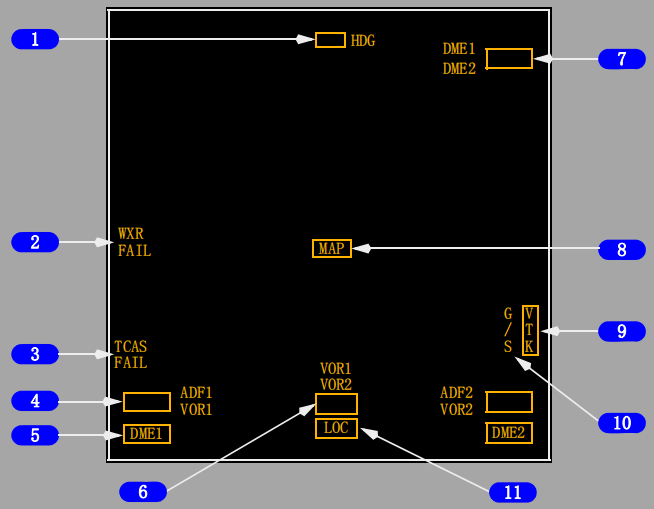
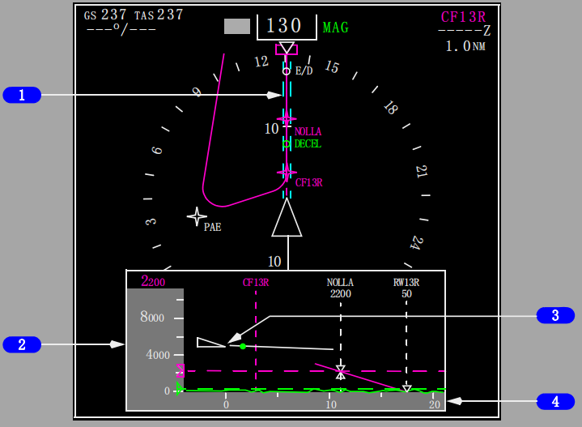
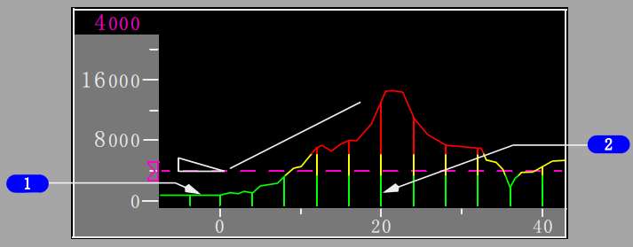
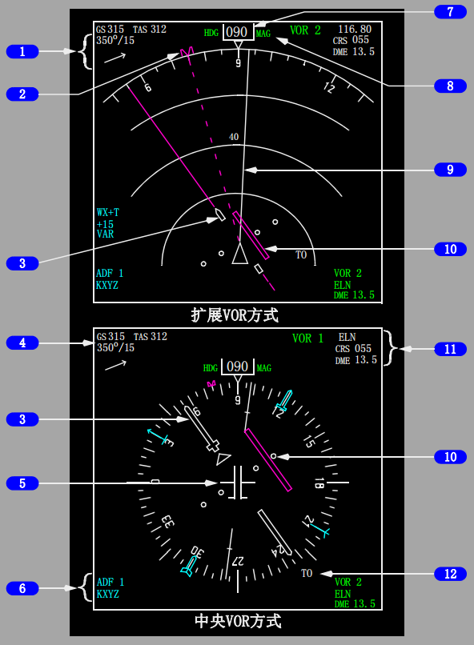
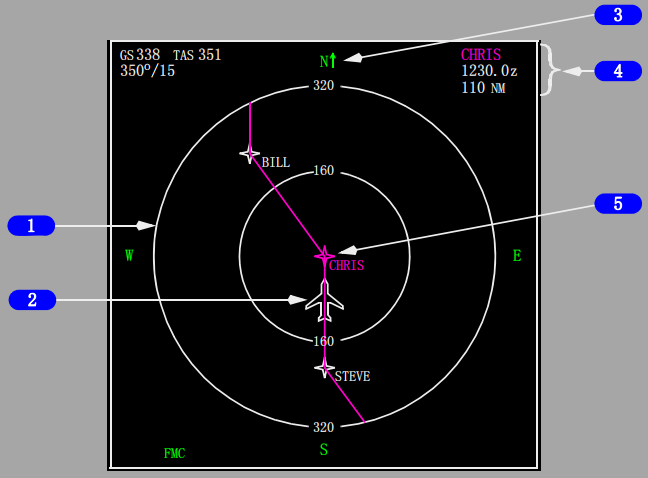
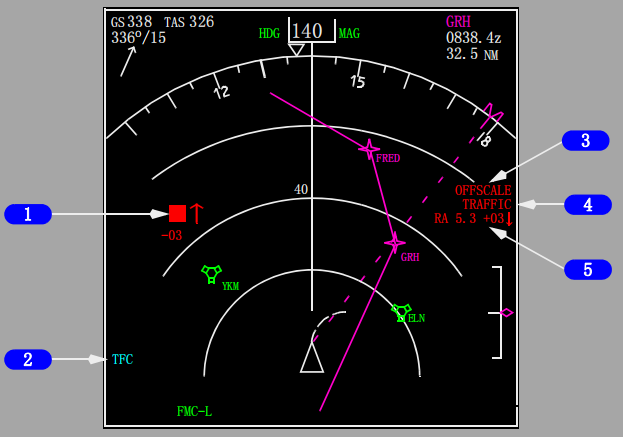
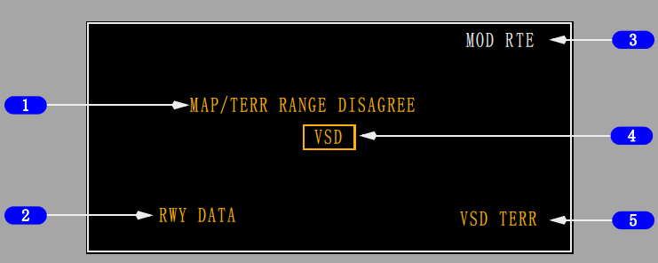
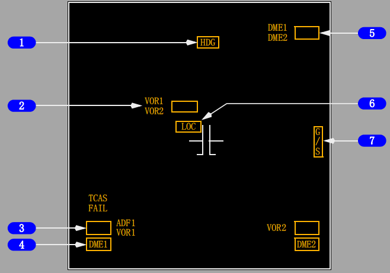

控制与指示:
返回面板 
1 航向失效故障旗(扩展和中央MAP、扩展APP和扩展VOR方式(选型))
航向信息失效。航向无法显示。
2 气象雷达指示(扩展和中央MAP、扩展APP和扩展VOR方式)
WXR FAIL(气象雷达失效) - 气象雷达失效无气象数据显示。
WXR WEAK(气象雷达弱) - 气象雷达校准故障。
WXR ATT(气象雷达姿态) - 天线姿态不稳定。
WXR STAB(气象雷达稳定性) - 天线稳定性关闭。
WXR DSP(气象雷达显示) - 范围数据输入失效。
仅在气象雷达测试(WXR TEST)方式下显示
A UTOTILT FAIL(自动倾斜失效) - 自动雷达方式失效。
3 TCAS失效故障旗(扩展和中央MAP、扩展VOR、扩展APP、PLAN方式)
TCAS失效。
4 ADF 1和ADF 2或VOR 1和VOR 2失效故障旗(扩展和中央MAP、扩展APP、扩展VOR方式(选型))
ADF或VOR失效。
5 DME 1和DME 2故障旗(扩展和中央MAP、扩展APP、扩展VOR方式)
选定的VOR DME失效。
6 VOR 1、2失效故障旗(扩展VOR方式)
VOR失效。
7 基准VOR DME(扩展VOR方式)和基准ILS DME(扩展APP方式)
基准VOR或ILS DME失效。
8 MAP失效故障旗(扩展和中央MAP、PLAN方式)
相应的FMC生成的地图显示失效。
9 垂直航迹失效故障旗(扩展和中央MAP方式)
FMC垂直航迹数据无效。
10 ILS下滑道/IAN下滑航径故障旗(扩展APP方式)
ILS下滑道失效。
11 ILS航向道/IAN FAC失效故障旗(扩展APP方式)
ILS航向道指示或IAN FAC失效。
垂直状态显示(VSD)
VSD代表了飞机的剖面视图和其沿当前航迹的周围环境。
显示在ND上的蓝绿色虚线(空中走廊)内的信息以剖面形式显示在VSD上。

1 航路线条
指示由VSD形成的区域。
2 高度基准刻度
根据飞机标志、地形和VSD背景显示中其它内容的垂直位置显示高度。
3 飞机标志
指示相对于地形的当前飞机高度(三角形底部)和水平位置(三角形顶点)。
4 水平基准刻度
以海里为单位显示范围。
VSD上显示的实际范围是EFIS控制面板上所选范围的一半。
1 MCP所选高度读数
显示方式控制面板(MCP)高度窗中设定的高度。
2 所选高度游标
指示MCP高度窗中设定的高度。
当所选择的高度超出刻度范围时，游标停留在刻度顶部或底部，只可见半个游标。
虚线处不停留。
3 最低气压(BARO)高度指针
指示在EFIS控制面板上选择的最低气压高度:
• 当飞机下降至所选的最低高度以下时，指针和虚线呈琥珀色
• 用EFIS控制面板上的RST电门复位。
将指针置于气压(BARO)位后，将最低基准选择器置于无线电(RADIO)位，则仅显示指针。
4 航路点识别符(ID)和锚线
正下方有任何高度限制时显示。垂直的虚线表示水平位置。
5 高度限制符号
在航路点锚线上显示为三角形。
6 FMC进近下滑航径角线
进近时显示，包括一个指定的进近角。
• 延伸10海里以增强飞行员的情景意识
• 与复飞航路点(而非跑道)相交接。
• 人工高度修正不会改变已显示的导航数据库定义的下滑道。

1 MCP所选垂直速度(V/S)
当选择MCP V/S方式时，所选的垂直速度显示为有目标角度虚线。
2 垂直飞行航径矢量
指示随着垂直速度和地速变化的当前飞行航径角。矢量的长度固定在VSD范围的一半。
3 至目标速度点的距离(RTSD)
指示飞机达到FMC或MCP目标速度时的位置。
• 在目标速度5节以内时，该点消失。
• 如果速度超过10节或大于目标速度，则该点会重新出现
• 如果在垂直飞行航迹矢量线的长度内不能达到目标速度，在矢量终点会由一个空心的点来替代。
4 3度基准线
当进近中没有指定的进近角时显示。
• 虚线延伸10海里以增强飞行员的情景意识
• 与跑道入口相交接
• 仅作为参考，该线可能与地形相交。
5 决断点
高于机场标高500英尺和1000英尺时，显示在FMC进近下滑航径角线或3度基准线上。
6 跑道
代表所选择的跑道。

1 地形剖面线
代表航路空中走廊内的最高地形。
• 位于飞机下方和前方的地形最高点。
• 描绘地形情况，以显示飞机与地形之间真实的高度间隔。
• 所显示的飞机后方的地形等同于当前位置上的地形
• VSD地形使用与水平地图中EGPWS地形一致的颜色 -
• 绿色：飞机下方500英尺(起落架放下时为250英尺)以上的地形
• 琥珀色：飞机下方500英尺(起落架放下时为250英尺)至飞机上方2000英尺的地形
• 红色：飞机上方2000英尺的地形。
2 垂直支撑线
垂直地形矢量沿地形剖面线以恒定间隔分布。

1 风向/风速/箭头
2 选定的航向游标
3 选定的航道指针
4 地速/真空速
5 飞机标志
6 VOR/ADF选择/识别代码或频率/VOR DME
7 当前航向
8 磁/真基准
9 航迹线
10 航向道偏离指示和刻度
11 基准VOR接收机/频率或识别代码/航道/DME
12 向台/背台（TO/FROM）指示和TO指针

1 范围圈
2 飞机标志
3 真北向上箭头
4 生效航路点信息
5 中央航路点
航路点位于显示的中央，在CDU航路航段（RTE LEGS）页面上标识为CTR。

1 TCAS 空中交通标志
指示空中交通目标的位置。
在扩展MAP、中央MAP、扩展APP和扩展VOR方式下，且在EFIS控制面板上选择了交通（TFC）时显示。
2 TCAS 信息
TFC(蓝绿色) - 指示在扩展MAP、中央MAP、扩展APP和扩展VOR方式下,在EFIS控制面板上选择的TFC。
TCAS TEST(蓝绿色) - TCAS处于测试方式。
TA ONLY(蓝绿色) - 仅TCAS TA方式。
TCAS OFF(琥珀色) - TCAS关闭。
3 超出刻度范围 (红色或琥珀色)
在EFIS控制面板上选择TFC的情况下，活动通告（TA）（琥珀色）或措施通告（RA）（红色）超出选定的显示范围。
4 空中交通(红色或琥珀色)
活动通告（TA）（琥珀色）或措施通告（RA）条件下无论是否在EFIS控制面板上选择了TFC都有显示。
5 无方位信息 (红色或琥珀色)
无相关方位的TA(琥珀色)或RA(红色)空中交通状况的文字说明。
信息提供空中交通的冲突类型、以海里为单位的范围、高度和一个垂直运动箭头。
最多可同时显示两条信息。
在EFIS控制面板上选择的TFC。

1 范围不一致指示(琥珀色)
MAP RANGE DISAGREE(地图范围不一致) - 指示EFIS控制面板上所选的范围和地图（MAP）显示范围不一致。
TERR RANGE DISAGREE(地形范围不一致) - 指示EFIS控制面板上所选的范围和地形显示范围不一致。
MAP/WXR RANGE DISAGREE(地图/气象雷达范围不一致) - 指示EFIS控制面板上所选的范围与地图（MAP）和地形显示范围不一致。
2 跑道数据指示(琥珀色)
F MC跑道数据不可用。
3 航路航路点修正指示(白色)
正在修正FMC生效航路。仅显示生效航路点。
4 VSD失效故障旗(琥珀色)
VSD无法显示。
5 地形数据失效指示(琥珀色)
EGPWS地形数据不可用。
当GPWS控制面板地形抑制(TERR INHIBIT)电门位于抑制位时，显示被VSD地形抑制(VSD TERR INHIBIT)替代。

1 航向失效故障旗(中央APP、中央VOR方式)
航向指示失效。航向无法显示。
2 VOR失效故障旗(中央VOR方式)
VOR失效。
3 ADF 1和ADF 2或VOR 1和VOR 2失效故障旗(中央APP、中央 VOR方式)
VOR或ADF失效。
4 DME 1和DME 2失效故障旗(中央APP、中央VOR方式)
所选的VOR DME失效。
5 基准VOR DME(中央VOR方式)和基准ILS DME(中央APP方式)
基准VOR或ILS DME失效。
6 ILS航向道/IAN FAC失效(选型)故障旗(中央APP方式)
ILS航向道指示或IAN FAC失效。
7 ILS下滑道/IAN下滑轨迹失效(选型)故障旗(中央APP方式)
ILS下滑道或IAN下滑航径失效。